UNIDAD 5 - TEMARIO - OBJETIVO
UNIDAD 5. ELABORACIÓN DEL MANUAL DE ORGANIZACIÓN
5.1 Concepto de manual
5.2 Los manuales administrativos
5.3 Objetivos de los manuales
5.4 Clasificación de los manuales
5.5 El manual de procedimientos
5.6 Contenido de un manual de procedimientos
5.7 Elaboración del manual de procedimiento
Objetivo.
Comprender la importancia de los manuales como herramientas para organizar y documentar el funcionamiento de una organización, identificando sus tipos, objetivos y contenido, para elaborar un manual de procedimientos de manera clara, ordenada y útil.
En las unidades anteriores analizamos la organización y representamos su estructura mediante el organigrama.
Ahora avanzamos un paso:
ORGANIGRAMA → muestra cómo está organizada la empresa.
MANUAL → documenta información necesaria para orientar su funcionamiento.
Y posteriormente nos concentraremos en el manual de procedimientos, que explica de manera ordenada cómo deben realizarse determinadas actividades.
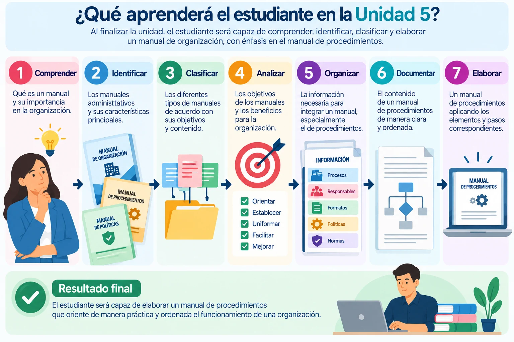
UNIDAD 5
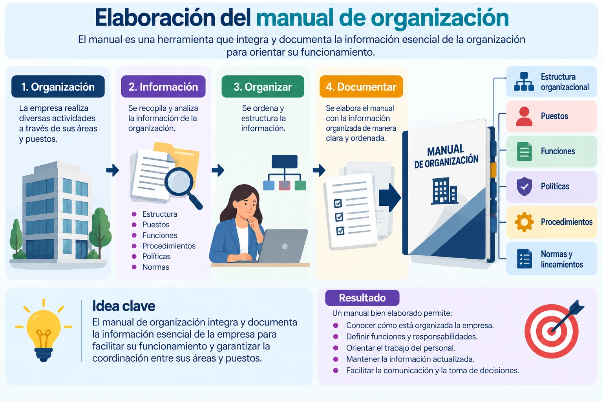
5.1 Concepto de manual
5.1 Concepto de manual
Un manual es un documento que reúne y organiza información necesaria para orientar la realización de actividades dentro de una organización.
Su propósito es convertir información que podría encontrarse dispersa en una fuente ordenada, clara y fácil de consultar.
En términos sencillos:
INFORMACIÓN DISPERSA → ORGANIZAR → DOCUMENTAR → CONSULTAR
¿Por qué documentar la información?
En una organización existen conocimientos que no deberían depender únicamente de la experiencia o memoria de las personas.
Por ejemplo, imaginemos que una trabajadora conoce perfectamente cómo realizar determinada actividad, pero esa información no está documentada. Si cambia de puesto o deja la empresa, parte de ese conocimiento puede perderse.
Un manual permite conservar información para que pueda ser consultada y utilizada por otras personas.
Documentar ayuda a convertir el conocimiento de las personas en conocimiento disponible para la organización.
¿Qué características debe tener un buen manual?
Independientemente de su tipo, debe procurar ser:
CLARO — comprensible para quien lo consulta.
ORDENADO — la información sigue una estructura lógica.
PRECISO — contiene información concreta y correcta.
ACCESIBLE — puede localizarse y consultarse fácilmente.
ACTUALIZADO — corresponde a la realidad actual de la organización.
ÚTIL — responde a una necesidad específica.
Un documento muy extenso no necesariamente es un buen manual. Su valor depende de que la información sea correcta, pertinente y fácil de utilizar.
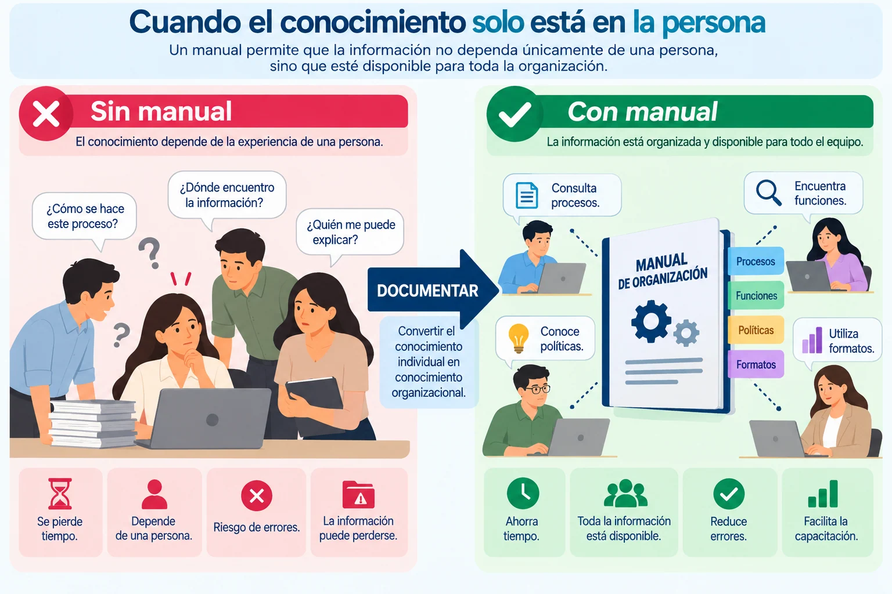
Manual impreso o digital
Un manual puede presentarse físicamente o mediante medios digitales.
Lo importante no es solamente su formato, sino que la información pueda:
LOCALIZARSE → COMPRENDERSE → APLICARSE → ACTUALIZARSE
Un archivo digital desorganizado o desactualizado tampoco cumple adecuadamente la función de un manual.
Un manual organiza y conserva información para que pueda ser consultada y aplicada cuando sea necesaria.
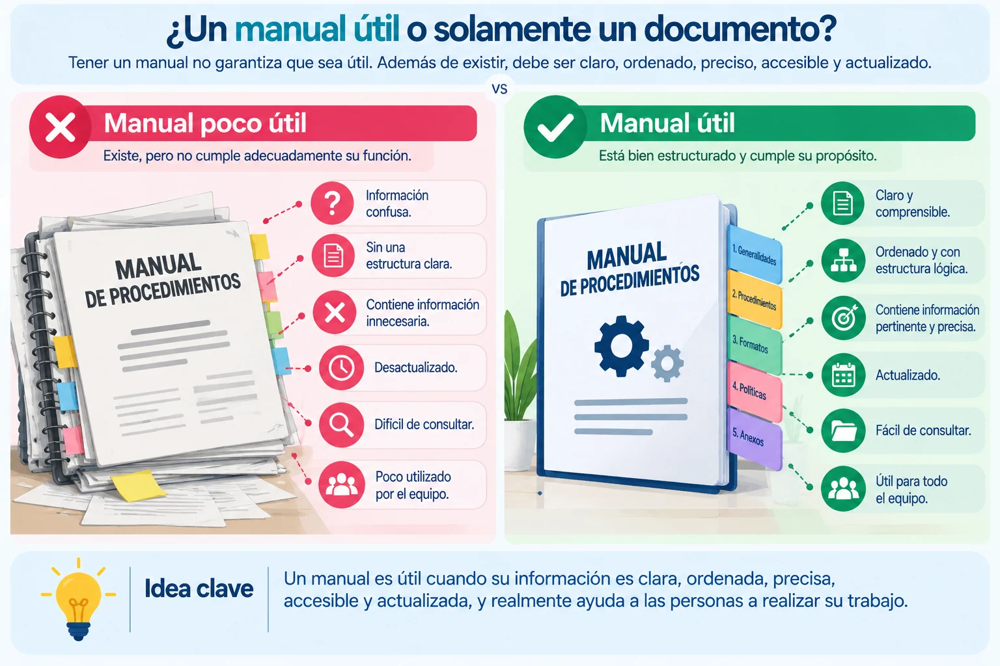
5.2 Los manuales administrativos
5.2 Los manuales administrativos
Los manuales administrativos son documentos que reúnen información formal sobre determinados aspectos de la organización para orientar, uniformar y facilitar el trabajo.
Su contenido dependerá de aquello que la empresa necesite documentar: su estructura, funciones, políticas, procedimientos o actividades.
¿Por qué son herramientas administrativas?
Porque ayudan a que determinadas actividades no dependan únicamente de instrucciones verbales o de la experiencia individual.
Por ejemplo, si cada supervisor explica un proceso de manera diferente, pueden aparecer:
DIFERENTES CRITERIOS → CONFUSIÓN → ERRORES → RETRABAJO
Cuando la organización establece y documenta una forma de trabajo, existe una referencia común para quienes participan.
Esto no significa que el manual sustituya la capacitación, la supervisión o la toma de decisiones. Es una herramienta que las complementa.
¿Quiénes pueden utilizarlos?
- Los manuales administrativos pueden servir a diferentes personas dentro de la misma organización.
- Un trabajador puede consultarlos para conocer una actividad.
- Un supervisor puede utilizarlos como referencia para orientar al personal.
- Un empleado de nuevo ingreso puede apoyarse en ellos para comprender cómo funciona determinada área.
- La administración puede utilizarlos para revisar y actualizar la forma en que se organiza el trabajo.
Del conocimiento informal al conocimiento formal
En algunas organizaciones existen instrucciones como:
“Siempre lo hemos hecho así.”
“Pregúntale a quien lleva más tiempo.”
“Yo te explico cómo se hace.”
Estas prácticas pueden funcionar temporalmente, pero generan dependencia de las personas.
El manual administrativo permite pasar de:
INSTRUCCIÓN VERBAL → INFORMACIÓN DOCUMENTADA → REFERENCIA ORGANIZACIONAL
Una consideración importante
Un manual administrativo no debe elaborarse únicamente para cumplir con un requisito.
Para que tenga utilidad debe corresponder a la realidad de la organización y mantenerse vigente.
Si la organización cambia pero el manual permanece igual, el documento deja de ser una referencia confiable.
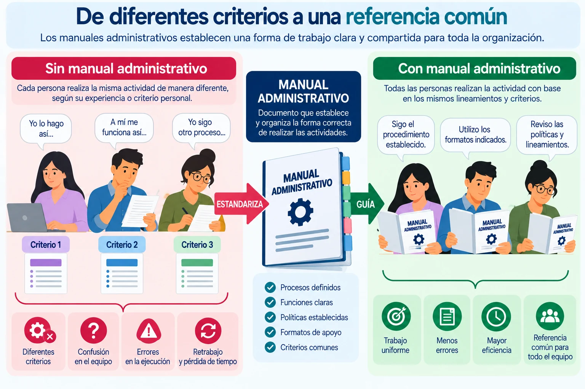
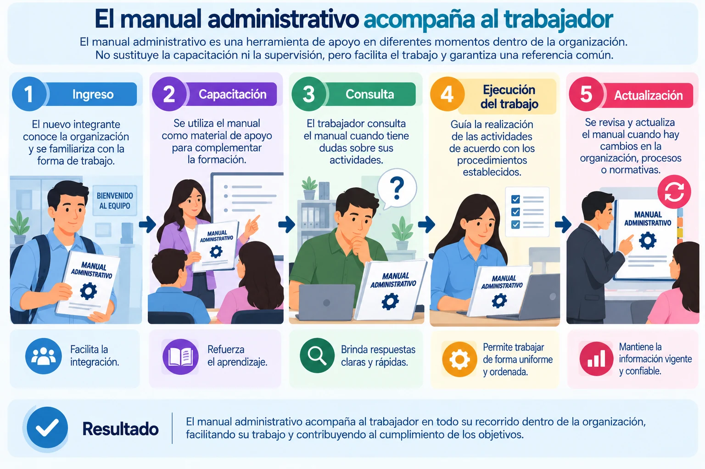
5.3 Objetivos de los manuales
5.3 Objetivos de los manuales
Los manuales se elaboran con una finalidad concreta: establecer una referencia formal que ayude a organizar y estandarizar determinados aspectos del trabajo.
Sus principales objetivos son:
UNIFORMAR — establecer criterios comunes para realizar las actividades.
DELIMITAR — aclarar funciones y responsabilidades cuando el tipo de manual lo requiere.
ORIENTAR — proporcionar información de consulta para realizar el trabajo.
COORDINAR — facilitar la relación entre personas, puestos y áreas.
CONSERVAR — mantener documentado el conocimiento organizacional.
CONTROLAR — proporcionar referencias para verificar si determinadas actividades se realizan conforme a lo establecido.
ACTUALIZAR — permitir que la información documentada se ajuste cuando la organización cambia.
Un objetivo importante: reducir la improvisación
Imaginemos una empresa donde cada persona resuelve una misma situación de acuerdo con su propio criterio:
MISMA SITUACIÓN → DIFERENTES RESPUESTAS
Esto puede generar inconsistencias.
El manual proporciona una referencia previamente establecida:
MISMA SITUACIÓN → CRITERIO DOCUMENTADO → RESPUESTA CONSISTENTE
Esto no significa eliminar por completo el criterio profesional. El manual establece una base común, mientras que las situaciones excepcionales pueden requerir análisis y toma de decisiones.
Los objetivos dependen del manual
No todos los manuales buscan exactamente lo mismo.
Por ejemplo:
- Un manual relacionado con la organización puede ayudar a aclarar estructura y responsabilidades.
- Uno de políticas establece criterios para orientar decisiones.
- Uno de procedimientos explica cómo desarrollar determinadas actividades.
Por eso, antes de elaborar un manual debemos preguntarnos:
¿Qué necesidad de la organización queremos resolver con este documento?
Si no existe una respuesta clara, es probable que terminemos creando un documento que nadie utiliza.
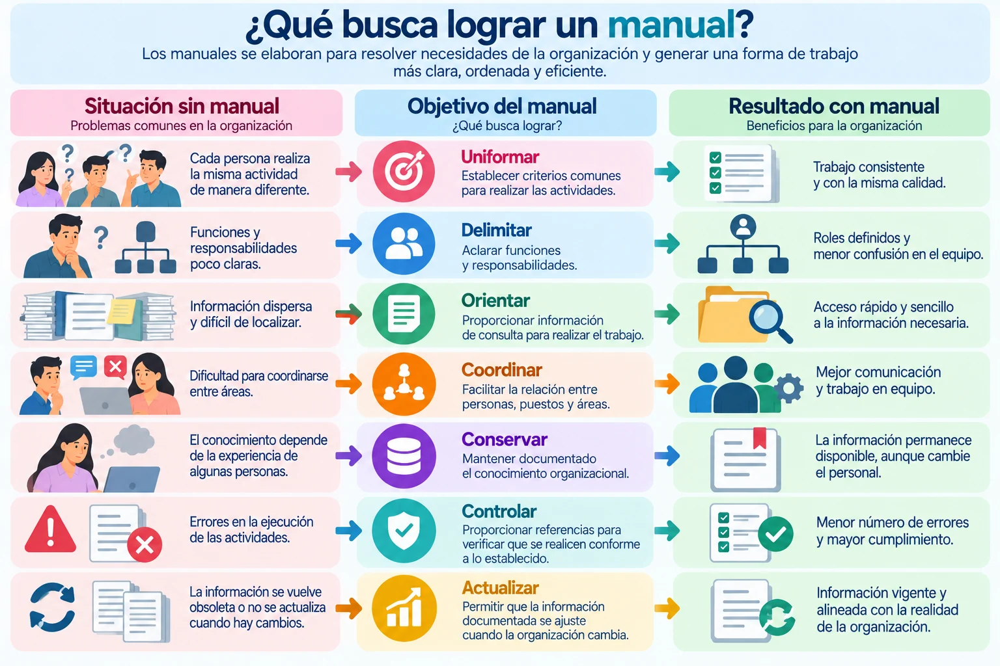
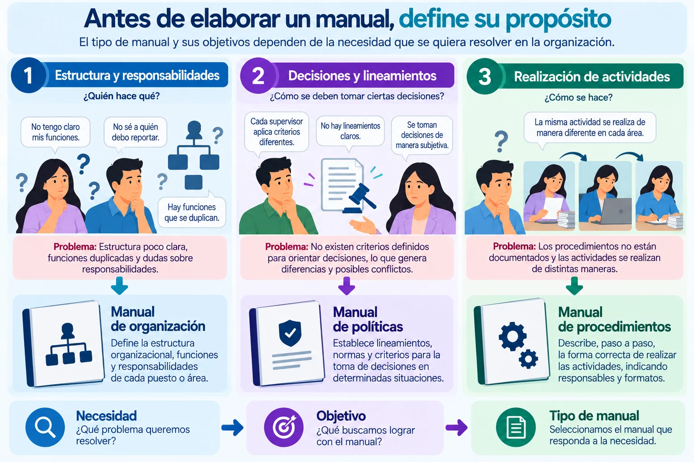
5.4 Clasificación de los manuales
5.4 Clasificación de los manuales
Los manuales administrativos pueden clasificarse de acuerdo con la información que contienen y la necesidad que atienden.
No todos documentan lo mismo: algunos explican la estructura de la empresa, otros establecen políticas y otros describen cómo realizar actividades.
Principales tipos
Manual de organización
Presenta información sobre la estructura, áreas, puestos, funciones y relaciones de autoridad de la organización.
Manual de procedimientos
Describe cómo se realizan determinadas actividades, indicando su secuencia, responsables y documentos utilizados.
Manual de políticas
Reúne los lineamientos y criterios que orientan determinadas decisiones y actuaciones.
Manual de puestos
Documenta información específica de los puestos, como funciones, responsabilidades, autoridad y requisitos.
Manual de bienvenida o inducción
Facilita la incorporación del personal proporcionando información básica sobre la organización, cultura, normas y funcionamiento general.
Un manual puede integrar diferentes contenidos
En la práctica, una organización no siempre necesita elaborar un documento independiente para cada tema.
Por ejemplo, una empresa pequeña podría integrar en un solo manual:
ESTRUCTURA + FUNCIONES + POLÍTICAS + PROCEDIMIENTOS
Mientras que una organización más grande puede mantenerlos en documentos separados.
Lo importante es que la clasificación responda a una necesidad real de información.
El contenido y propósito del documento determinan qué tipo de manual necesitamos.
¿Cómo reconocerlos?
Una manera sencilla de diferenciarlos es preguntarnos:
¿Cómo está organizada la empresa? → Manual de organización.
¿Cómo se realiza una actividad? → Manual de procedimientos.
¿Qué criterios debemos seguir? → Manual de políticas.
¿Qué corresponde hacer a un puesto? → Manual de puestos.
¿Qué necesita conocer una persona al ingresar? → Manual de bienvenida o inducción.
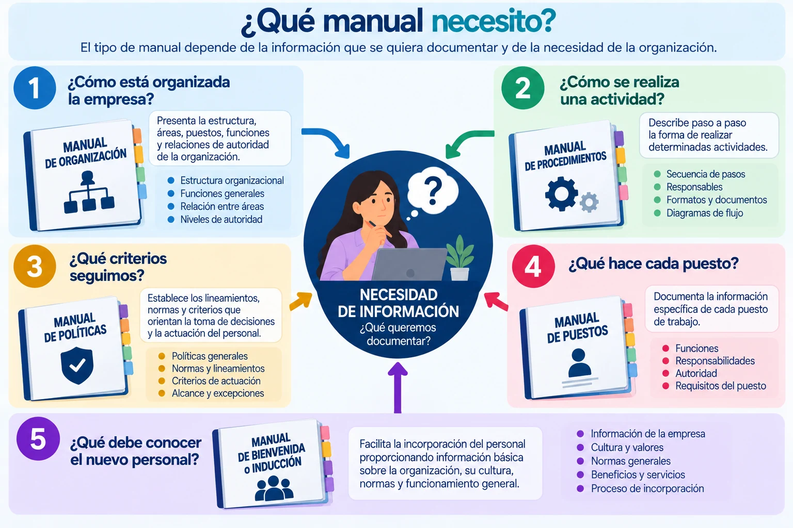
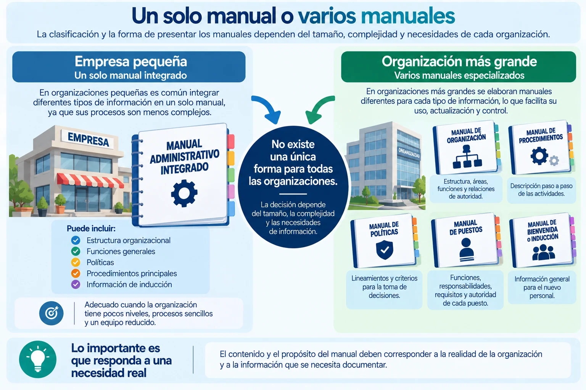
5.5 El manual de procedimientos
5.5 El manual de procedimientos
Un manual de procedimientos es un documento que describe de manera ordenada cómo deben realizarse determinadas actividades o procesos dentro de una organización.
Su característica principal es que permite establecer una secuencia de trabajo, indicando qué debe suceder desde el inicio hasta el resultado esperado.
De una actividad a un procedimiento
Una actividad puede parecer sencilla cuando alguien ya sabe realizarla. Sin embargo, para documentarla necesitamos comprender su secuencia.
Por ejemplo, pensemos en una solicitud de compra:
SOLICITUD → REVISIÓN → AUTORIZACIÓN → COMPRA → RECEPCIÓN → REGISTRO
El procedimiento permite que las personas involucradas conozcan qué ocurre primero, qué sigue y cómo termina el proceso.
¿Por qué es importante?
Cuando un procedimiento no está documentado pueden aparecer:
pasos omitidos, actividades duplicadas, diferentes formas de realizar el trabajo, dudas sobre quién debe intervenir y dificultades para capacitar a otras personas.
Al documentarlo se establece una referencia que facilita realizar la actividad de manera ordenada y consistente.
Un procedimiento puede involucrar varias áreas
Por ejemplo, en una contratación pueden intervenir:
ÁREA SOLICITANTE → RECURSOS HUMANOS → CANDIDATO → RESPONSABLE DE CONTRATACIÓN
Cada participante realiza una parte distinta, pero todos forman parte del mismo procedimiento.
Procedimiento no significa rigidez absoluta
El manual establece una forma de trabajo autorizada, pero debe revisarse cuando cambian:
la tecnología, los responsables, los formatos, las políticas o la propia forma de realizar el proceso.
Por eso, un procedimiento documentado también debe mantenerse actualizado.
El manual de procedimientos convierte una actividad en una secuencia clara que puede ser comprendida, ejecutada y revisada.
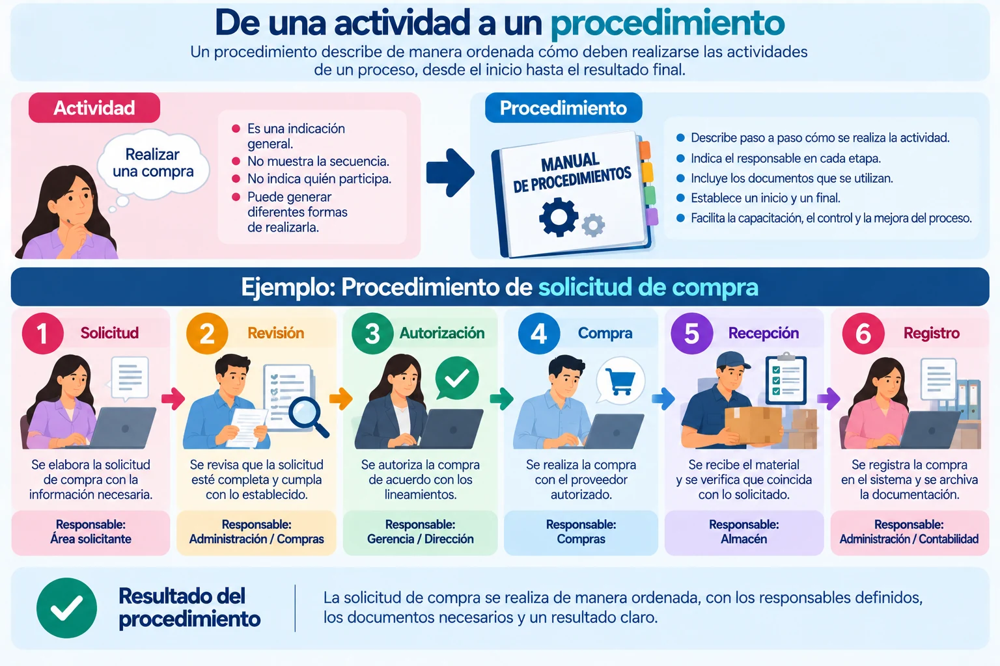
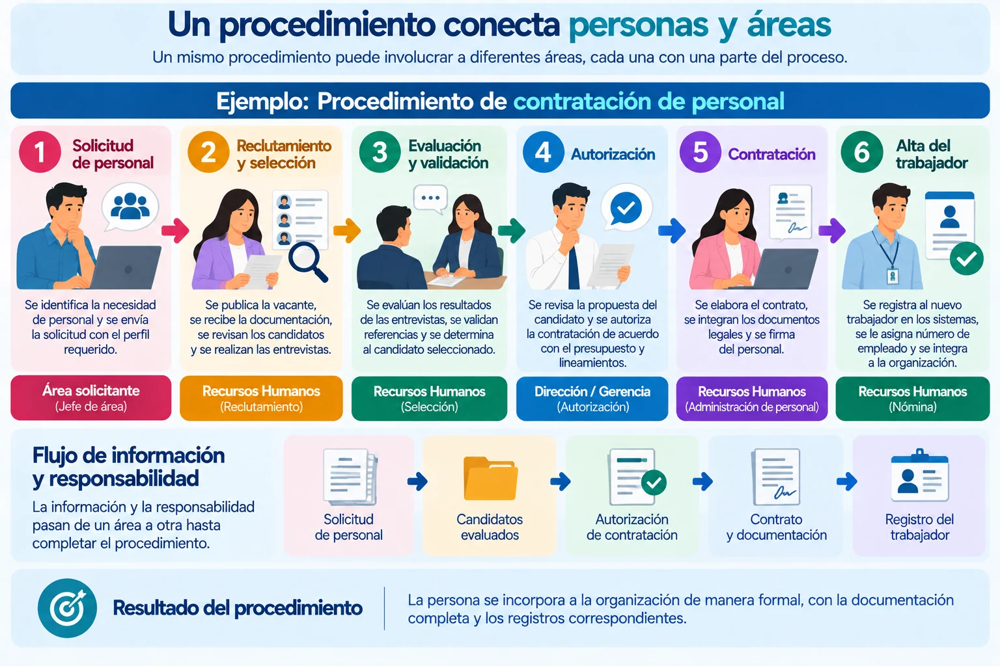
5.6 Contenido de un manual de procedimientos
5.6 Contenido de un manual de procedimientos
Un manual de procedimientos debe reunir la información necesaria para responder preguntas fundamentales:
¿QUÉ se hace? — ¿PARA QUÉ? — ¿QUIÉN lo hace? — ¿CÓMO se hace? — ¿QUÉ se utiliza?
Aunque el contenido puede variar según la organización, normalmente encontramos los siguientes elementos:
Identificación
Nombre de la organización, área responsable, nombre del manual, fecha de elaboración o actualización y versión.
Objetivo
Explica qué se pretende lograr con el procedimiento.
Alcance
Define dónde comienza y termina el procedimiento, así como las áreas o personas involucradas.
Responsables
Indica quién participa y qué responsabilidad tiene durante el proceso.
Políticas o lineamientos
Establecen los criterios que deben respetarse durante la ejecución.
Descripción del procedimiento
Presenta las actividades en orden lógico y secuencial.
Formatos y documentos
Identifica solicitudes, registros, autorizaciones, comprobantes u otros documentos utilizados.
Diagrama de flujo
Representa visualmente la secuencia y facilita comprender cómo avanza el procedimiento.
Ejemplo:
Tomemos nuevamente una solicitud de compra.
El manual no debería limitarse a decir:
“Realizar el procedimiento de compra.”
Debe permitir identificar, por ejemplo:
Objetivo: adquirir los materiales requeridos de manera autorizada.
Responsables: área solicitante, compras, gerencia y almacén.
Inicio: surge una necesidad de material.
Actividades: solicitar → revisar → autorizar → comprar → recibir → registrar.
Documentos: solicitud de compra, cotización, orden de compra y comprobantes.
Final: material recibido y compra registrada.
Así, una actividad general se convierte en información documentada que otra persona puede comprender y seguir.
Algo importante: contenido útil, no contenido excesivo
Un manual no mejora por tener más páginas.
Debe contener la información necesaria para ejecutar y comprender el procedimiento, evitando datos que no aporten al proceso.
Un buen manual permite saber qué hacer, quién debe hacerlo y cómo avanzar de una etapa a otra.
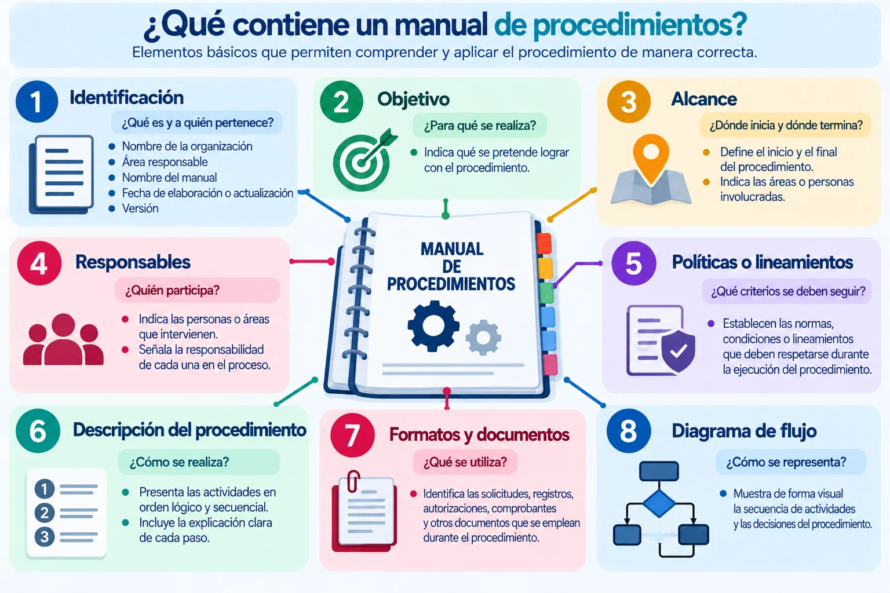
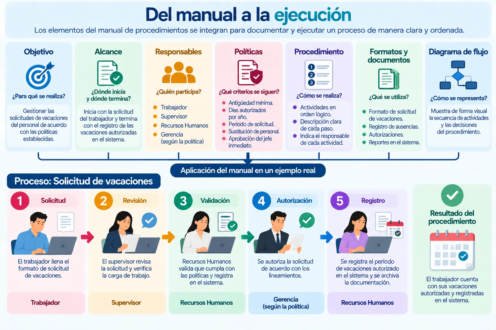
5.7 Elaboración del manual de procedimientos
5.7 Elaboración del manual de procedimiento
En el 5.6 vimos qué debe contener el manual. Ahora veremos cómo se elabora.
El punto más importante es que no debemos comenzar redactando el manual. Primero necesitamos conocer y analizar cómo se realiza realmente el procedimiento.
¿Cómo se elabora?
1. Seleccionar el procedimiento
Primero se determina qué actividad necesitamos documentar.
Por ejemplo: contratación de personal, solicitud de vacaciones, atención de clientes, recepción de materiales o pago a proveedores.
2. Recopilar información
Debemos investigar cómo se realiza actualmente el trabajo.
Podemos utilizar:
OBSERVACIÓN – ENTREVISTAS – DOCUMENTOS – FORMATOS – REGISTROS
Aquí buscamos conocer el proceso real, no solamente cómo suponemos que debería realizarse.
3. Analizar el procedimiento actual
Con la información recopilada revisamos cada actividad para detectar:
pasos innecesarios – duplicidades – demoras – responsables poco claros – controles excesivos – actividades faltantes
Esto conecta directamente con lo que estudiamos anteriormente sobre análisis y mejora del trabajo.
4. Definir el procedimiento
Después del análisis establecemos una secuencia clara:
INICIO → ACTIVIDADES → DECISIONES → RESPONSABLES → RESULTADO
En este momento también definimos los documentos y formatos necesarios.
5. Documentar
Con el procedimiento definido se integran los elementos estudiados en el 5.6:
objetivo, alcance, responsables, políticas, descripción de actividades, formatos y diagrama de flujo.
6. Revisar y validar
El procedimiento debe revisarse con las personas que realmente participan en él.
La pregunta fundamental es:
¿Lo que está escrito corresponde a lo que debe realizarse?
Si encontramos errores o inconsistencias, se corrigen antes de autorizar el documento.
7. Implementar y actualizar
Una vez aprobado, el manual se comunica a las personas involucradas y comienza a utilizarse.
Pero el trabajo no termina ahí:
IMPLEMENTAR → OBSERVAR → EVALUAR → ACTUALIZAR
Si cambia el proceso, también debe cambiar el manual.
Primero se analiza el trabajo; después se documenta.
Copiar un procedimiento incorrecto en un manual solamente consigue formalizar una forma ineficiente de trabajar.
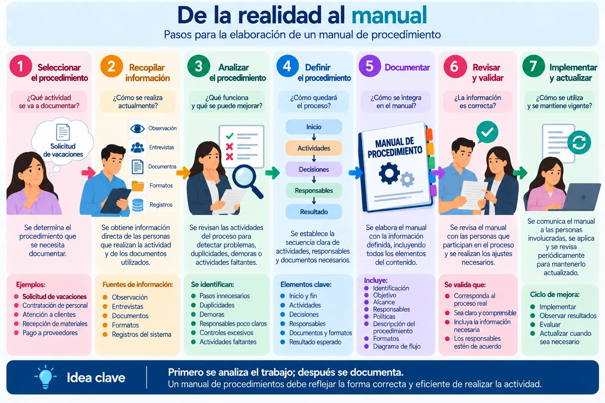
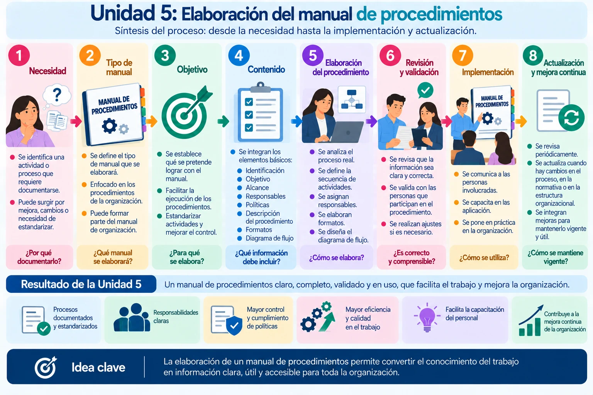